Tema 6: Modelos ARIMA de Box&Jenkins(1)
![]()
Paquetes de R
Para este tema, se necesita cargar estos paquetes:
Introducción
Contenido
Introducción
AR(1)
AR(2)
MA(1)
ARMA(1,1)
Introducción
- ARIMA se refiere a AutoRegressive Integrated Moving Average.
- Es un conjunto de modelos en que cada modelo tiene una función de autocorrelación teórica y una función de autocorrelación parcial teórica específica.
- La idea del enfoque de Box-Jenkins es que compara estas funciones teóricas con las respectivas funciones muestrales de autocorrelación y de autocorrelación parcial con el fin de identificar y ajustar el modelo apropiado.
AR(1)
Contenido
Introducción
AR(1)
AR(2)
MA(1)
ARMA(1,1)
Modelo no estacional autorregresivo de orden 1
El AR(1) está definido por el siguiente proceso estocástico lineal:
\[Z_t=C+\phi_1 Z_{t-1}+a_t\] donde:
\(C\) y \(\phi_1\) son constantes desconocidas,
\(a_t \sim wn(0,\sigma_a^2)\) (independiente de \(Z_t\)), i.e. una sucesión de v.a. mutuamente no correlacionadas e idénticamente distribuidas con media \(0\) y variancia \(\sigma_a^2\).
Nota: - Generalmente se supone que \(a_t\) es ruido blanco gaussiano.
Recursivamente se puede obtener: \[Z_t=C+\phi_1 Z_{t-1}+a_t\] \[=C+\phi_1 (C+\phi_1 Z_{t-2}+a_{t-1})+a_t\] \[=C(1+\phi_1+\phi_1^2+...+\phi_1^{J-1})+a_{t}+\phi_1 a_{t-1}+\phi_1^2 a_{t-2}+...+\] \[\phi_1^{J-1} a_{t-(J-1)}+\phi_1^J Z_{t-J}\] \[=C \left( \frac{1-\phi_1^J}{1-\phi_1} \right)+\sum_{j=0}^{J-1} \phi_1^j a_{t-j}+\phi_1^J Z_{t-J}\]
Recursivamente se puede obtener una serie infinita: \[Z_t=C \left( \frac{1-\phi_1^J}{1-\phi_1} \right)+\sum_{j=0}^{J-1} \phi_1^j a_{t-j}+\phi_1^J Z_{t-J}\] En el caso de \(|\phi_1|<1\), cuando \(J \rightarrow \infty\),
\[Z_t=C \left( \frac{1}{1-\phi_1} \right)+\sum_{j=0}^{\infty} \phi_1^j a_{t-j}\]
Como \(E(a_t)=0\) para todo \(t\), \[E(Z_t)=C \left( \frac{1}{1-\phi_1}\right)=\mu\] es independiente de \(t\).
Como \(Var(a_t)=\sigma_a^2\) para todo \(t\), \[Var(Z_t)=\sum_{j=0}^{\infty} \phi_1^{2j} Var(a_{t-j})=\left( \frac{1}{1-\phi_1^2} \right) \sigma_a^2\] es finito e independiente de t.
Puesto que \(Z_t-\mu=\sum\limits_{j=0}^{\infty} \phi_1^j a_{t-j}\), la función de autocovariancia es \[\gamma_Z(t,t-k)=Cov(Z_t,Z_{t-k})=E \left[ (Z_t-\mu)(Z_{t-k}-\mu) \right]\]
\[=E\left[ \left(\sum\limits_{i=0}^{\infty} \phi_1^i a_{t-i}\right) \left( \sum\limits_{j=0}^{\infty} \phi_1^j a_{t-k-j}\right) \right].\] Tome \(m=k+j (o~ j=m-k)\),
\[\gamma_Z(t,t-k)=E\left[ \left(\sum\limits_{i=0}^{\infty} \phi_1^i a_{t-i}\right) \left( \sum\limits_{m=k}^{\infty} \phi_1^{m-k} a_{t-m}\right) \right]\]
\[=E\left[ \left(\sum\limits_{i=0}^{k-1} \phi_1^i a_{t-i}+\sum\limits_{i=k}^{\infty} \phi_1^i a_{t-i}\right) \left( \sum\limits_{m=k}^{\infty} \phi_1^{m-k} a_{t-m}\right) \right].\]
\[\gamma_Z(t,t-k)=E\left[ \left(\sum\limits_{i=0}^{k-1} \phi_1^i a_{t-i}+\sum\limits_{i=k}^{\infty} \phi_1^i a_{t-i}\right) \left( \sum\limits_{m=k}^{\infty} \phi_1^{m-k} a_{t-m}\right) \right]\] \[=E\left[ \left(\sum\limits_{i=k}^{\infty} \phi_1^i a_{t-i}\right) \left( \sum\limits_{m=k}^{\infty} \phi_1^{m-k} a_{t-m}\right) \right]=\sum\limits_{i=k}^{\infty}\phi_1^i \phi_1^{i-k} E(a_{t-i}^2)\]
\[=\sigma_a^2 \sum\limits_{j=0}^{\infty} \phi_1^{k+j} \phi_1^j=\phi_1^k \sigma_a^2 \sum\limits_{j=0}^\infty \phi_1^{2j}=\phi_1^k \sigma_a^2 \frac{1}{1-\phi_1^2}\] \[=\phi_1^k Var(Z_t),~k=1,2,...\] depende únicamente del regazo \(k\), y es independiente de \(t\).
- Por lo tanto, El proceso AR(1) es estacionario si \(|\phi_1|<1\).
- La función de autocorrelación teórica es:
\[\rho_k=\frac{Cov(Z_t,Z_{t-k})}{\sqrt{Var(Z_t)Var(Z_{t-k})}}=\frac{Cov(Z_t,Z_{t-k})}{Var(Z_t)}\] \[=\frac{\phi_1^k Var(Z_t)}{Var(Z_t)}=\phi_1^k,~k=1,2,...\] - Note que la función de autocorrelación teórica decae exponencialmente a cero.
- La función de autocorrelación teórica de un AR(1) es:
\[\rho_k=\phi_1^k,~k=1,2,...\]
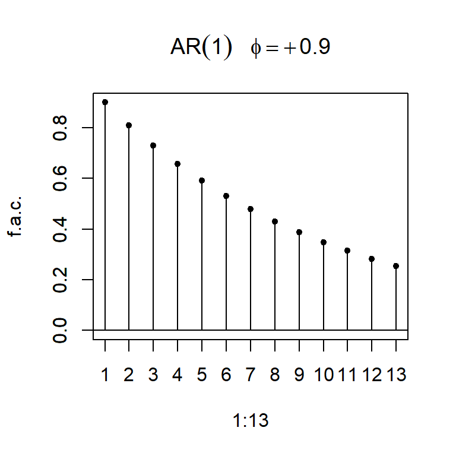
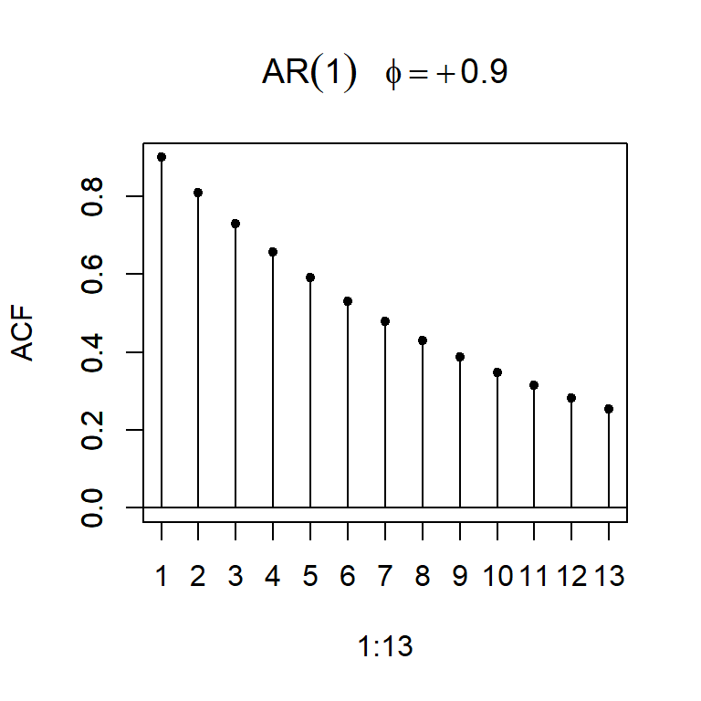
- Considere \(a_t \sim N(0,1)\), y un modelo AR(1): \[Z_t=\phi_1 Z_{t-1}+a_t\]
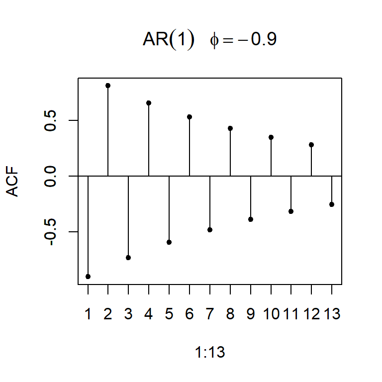
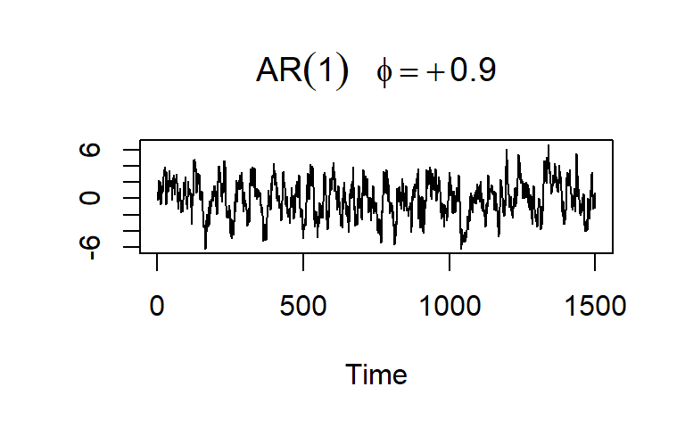
AR(2)
Contenido
Introducción
AR(1)
AR(2)
MA(1)
ARMA(1,1)
Modelo no estacional autorregresivo de orden 2
- El AR(2) está definido por el siguiente proceso estocástico lineal:
\[Z_t=C+\phi_1 Z_{t-1}+\phi_2 Z_{t-2}+a_t\] donde:
\(C\), \(\phi_1\) y \(\phi_2\) son constantes desconocidas,
\(a_t \sim wn(0,\sigma_a^2)\) (independiente de \(Y_t\)).
- Se puede mostrar que el proceso AR(2) es estacionario si:
- \(|\phi_2|<1\).
- \(\phi_1+\phi_2<1\).
- \(-\phi_1+\phi_2<1\).
Se puede mostrar que:
- \(E(Z_t)= \frac{C}{1-\phi_1-\phi_2}=\mu\) es independiente de \(t\).
- \(Var(Z_t)=\frac{(1-\phi_2) \sigma_a^2}{(1+\phi_2)(1-\phi_1-\phi_2)(1+\phi_1-\phi_2)}\) es independiente de \(t\) y finito.
- La función de autocorrelación teórica, \(\rho_k\), es dada por: \[\rho_1=\frac{\phi_1}{1-\phi_2},\] \[\rho_2=\frac{\phi_1^2}{1-\phi_2}+\phi_2,\] \[\rho_k=\phi_1 \rho_{k-1}+\phi_2 \rho_{k-2},~ k \geq3.\] Bajo las condiciones de estacionariedad, \(\rho_k\) depende únicamente de \(k\) y no depende del \(t\) y decae hacia cero según una combinación de exponenciales y/o ondas sinusoidales amortiguadas.
- La función de autocorrelación teórica de un AR(2):
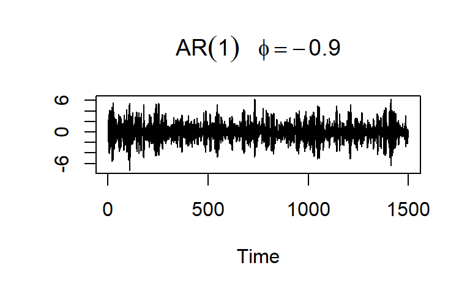
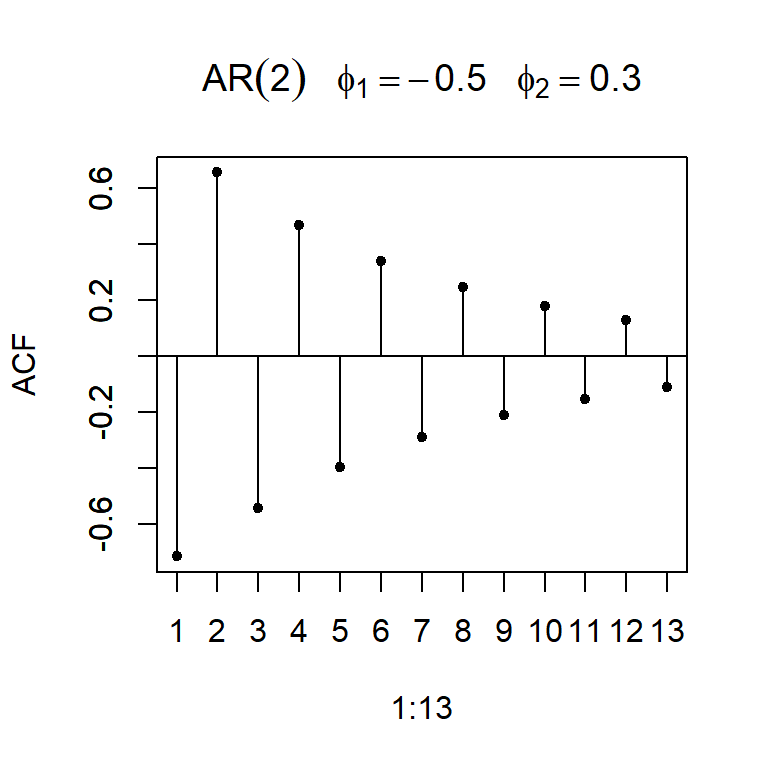
- Considere \(a_t \sim N(0,1)\), y un modelo AR(2): \[Z_t=\phi_1 Z_{t-1}+\phi_2 Z_{t-2}+a_t\]
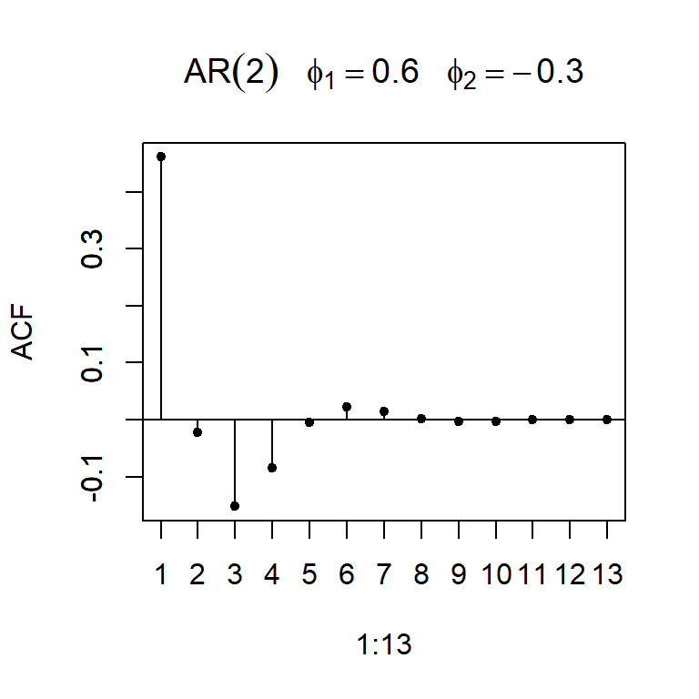
La función de autocorrelación parcial
La autocorrelación parcial (f.a.c.p.) en el rezago \(k\) mide el grado de asociación lineal entre \(Z_t\) y \(Z_{t-k}\) cuando los efectos de los otros rezagos \(1,2,...,k-1\) han sido eliminados.
Denotemos la función de autocorrelación parcial teórica de orden \(k\) por \(\rho_{kk}\) para \(k=1,2,...\) y la función de autocorrelación parcial muestral de orden \(k\) con \(r_{kk}\), para \(k=1,2,...\).
Teóricamente la función de autocorrelación parcial de un proceso estacionario \(Z_t\), denotado por \(\rho_{kk}\), para \(k=1,2,...\) es \[\rho_{11}=corr(Z_{t+1},Z_t)=\rho_1, ~~~~\text{y}\]
\[\rho_{kk}=corr\left[Z_{t+k}-\hat{Z}_{t+k}~,~Z_t-\hat{Z}_{t}\right],~~\text{para}~~ k \geq 2,\] donde
\(\hat{Z}_{t+k}=\beta_1 Z_{t+k-1}+\beta_2 Z_{t+k-2}+...+\beta_{h-1} Z_{t+1}\)
\(\hat{Z}_{t}=\beta_1 Z_{t+1}+\beta_2 Z_{t+2}+...+\beta_{h-1} Z_{t+k-1}\)
- Si \(Z_t\) es un proceso gaussiano,
\[\rho_{kk}=corr(Z_{t+k},Z_t|Z_{t+1},...,Z_{t+k-1}).\]
i.e. es la correlación de una distribución normal bivariada \((Z_{t+k},Z_t)\) condicional a \({Z_{t+1},...,Z_{t+k-1}}\).
- Se puede comprobar que:
Para AR(1): - \(\rho_{11}=\phi_1\) - \(\rho_{kk}=0\) para \(k \geq 2\). - La función de autocorrelación parcial cae bruscamente a cero después del rezago 1.
Para AR(2): - \(\rho_{11}=\rho_1=\frac{\phi_1}{1-\phi_2}\) - \(\rho_{22}=\phi_2\) - \(\rho_{kk}=0\) para \(k \geq 3\). - La función de autocorrelación parcial cae bruscamente a cero después del rezago 2.
f.a.c. y f.a.c.p. teórica del AR(1)
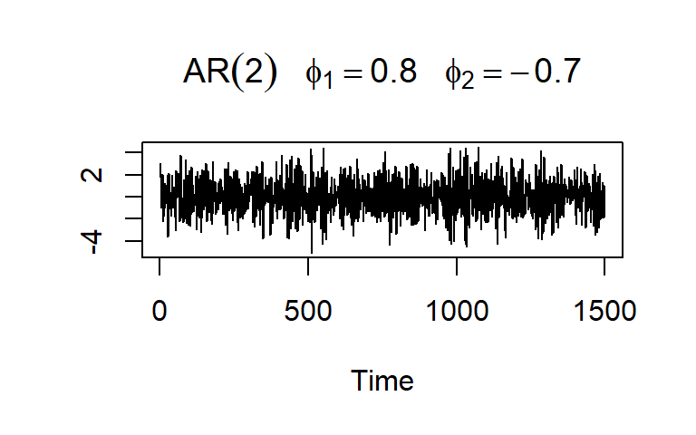La función de autocorrelación parcial de un AR(1)
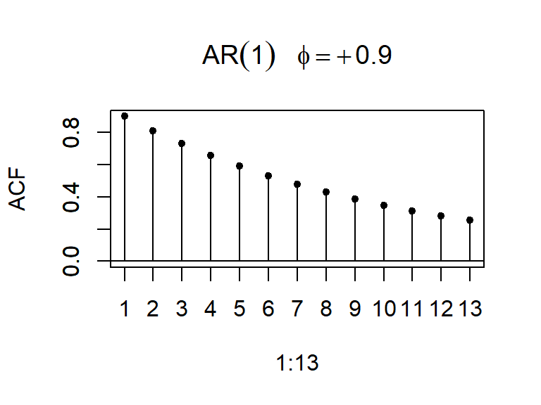La f.a.c. y f.a.c.p. teórica de un AR(2)
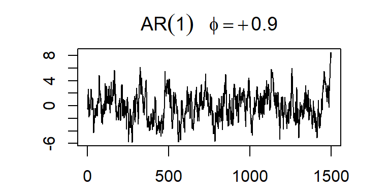La f.a.c. y f.a.c.p. muestrales de un AR(2)
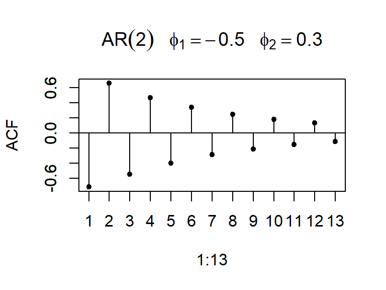MA(1)
Contenido
Introducción
AR(1)
AR(2)
MA(1)
ARMA(1,1)
Modelo no estacional de medias móviles de orden 1
El MA(1) está definido por el siguiente proceso estocástico lineal:
\[Z_t=C+a_t-\theta_1 a_{t-1}\] donde:
\(C\) y \(\theta_1\) son constantes desconocidas,
\(a_t \sim wn(0,\sigma_a^2)\).
Como \(E(a_t)=0\) para todo \(t\), \[E(Z_t)=C\] es independiente de \(t\).
\[Var(Z_t)= Var(a_t)+\theta_1^2 Var(a_{t-1})=\sigma_a^2+\theta_1^2 \sigma_a^2=\sigma_a^2(1+\theta_1^2)\] es finito e independiente de t.
\[\gamma_Z(t,t-k)=Cov(Z_t,Z_{t-k})=E \left[ (Z_t-C)(Z_{t-k}-C) \right]\] \[=E \left[ (a_t-\theta_1 a_{t-1})(a_{t-k}-\theta_1 a_{t-k-1}) \right]\] \[ =\left\lbrace \begin{aligned} -\theta_1 \sigma_a^2, & & k = 1 \\ 0, & & k > 1 \\ \end{aligned} \right. \]
Note que MA(1) es siempre estacionario independiente del valor de \(\theta\).
- Sin embargo, es necesario aplicar la restricción \(|\theta_1|<1\).
- Note que a partir de \(Z_t=C+a_t-\theta_1 a_{t-1}\), se puede despejar \(a_t\), \[-C+Z_t+\theta_1 a_{t-1}=a_t,\] y sustituir recursivamente (como el caso de AR(1)): \[-C+Z_{t-1}+\theta_1 a_{t-2}=a_{t-1},\] en el modelo \[Z_t=C+a_t-\theta_1 \left[ -C+Z_{t-1}+\theta_1 a_{t-2} \right]\]
podemos obtener: \[Z_t=C(1+\theta_1+\theta_1^2+...)-\theta_1 Z_{t-1}-\theta_1^2 Z_{t-2}-\theta_1^3 Z_{t-3}-...+a_t\] - Si \(|\theta_1|\geq 1\), la ecuación anterior implica que \(Z_t\) depende más a los valores pasados lejanos que los valores cercanos, lo cual no es realista en su interpretación. - Esta condición es conocida como condición de invertibilidad.
La función de autocorrelación del proceso MA(1) es: \[\rho_1=\frac{Cov(Z_t,Z_{t-1})}{\sqrt{Var(Z_t)Var(Z_{t-1})}}=\frac{Cov(Z_t,Z_{t-1})}{Var(Z_t)}\] \[=\frac{-\theta_1 \sigma_a^2}{\sigma_a^2(1+\theta_1^2)}=\frac{-\theta_1 }{1+\theta_1^2}\] \[\rho_k=0, ~~~\text{para}~~ k\geq 2\]
La función de autocorrelación teórica de MA(1) cae bruscamente a cero después del rezago 1.
- Se puede demostrar que la función de autocorrelación parcial está dada por: \[\rho_{kk}=\frac{-\theta_1^k (1-\theta_1^2)}{1-\theta_1^{2(k+1)}},~~\text{para}~k \geq 1.\]
- La f.a.c.p. decae a cero de forma exponencial amortiguada.
La f.a.c. y f.a.c.p. teórica de un MA(1):
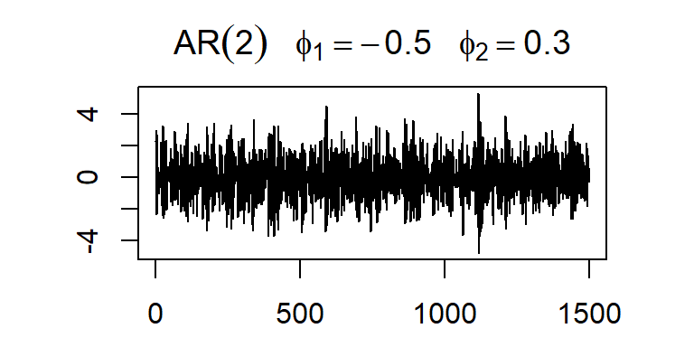
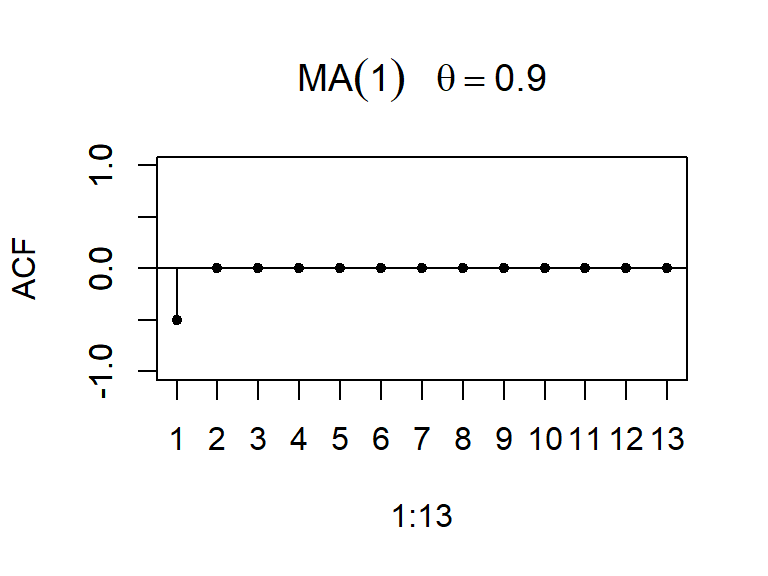
- Considere \(a_t \sim N(0,1)\), y un modelo MA(1): \[Z_t=C+a_t-\theta_1 a_{t-1}\]
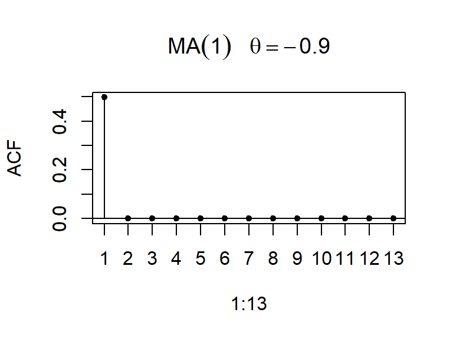
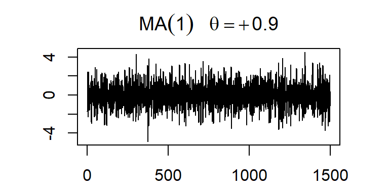
El modelo no estacional de medias móviles de orden 2, MA(2), está definido por el siguiente proceso estocástico lineal:
\[Z_t=C+a_t-\theta_1 a_{t-1}-\theta_2 a_{t-2}\] donde:
\(C\), \(\theta_1\) y \(\theta_2\) son constantes desconocidas,
\(a_t \sim wn(0,\sigma_a^2)\).
Se puede demostrar que MA(2) es estacionario para todo \(\theta_1\) y \(\theta_2\), con: - \(E(Z_t)=C\).
- \(Var(Z_t)=\sigma_a^2(1+\theta_1^2+\theta_2^2)\).
- La función de autocorrelación está dada por:
\[ \rho_k=\left\lbrace \begin{aligned} \frac{-\theta_1 (1-\theta_2) }{1+\theta_1^2+\theta_2^2}, & & k = 1 \\ \frac{-\theta_2}{1+\theta_1^2+\theta_2^2} & & k=2 \\ 0, & & k \geq 3 \\ \end{aligned} \right. \] - La función de autocorrelación parcial decae a cero según una combinación de exponenciales amortiguadas y/o ondas sinusoidales amortiguadas.
- El proceso MA(2) es invertible si: \[|\theta_2|<1\] \[\theta_1+\theta_2<1\] \[\theta_2-\theta_1<1\]
- La f.a.c. y f.a.c.p. teórica de un MA(2):
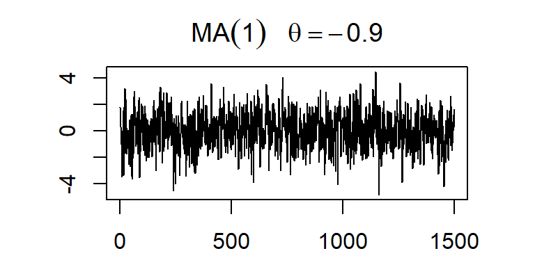
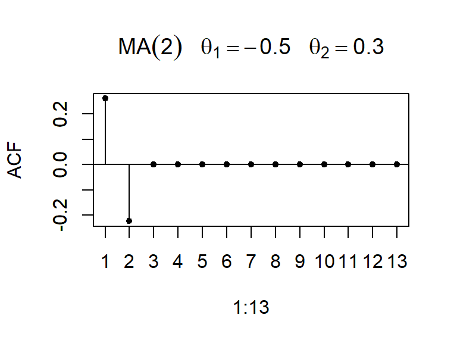
- Considere \(a_t \sim N(0,1)\), y un modelo MA(2)
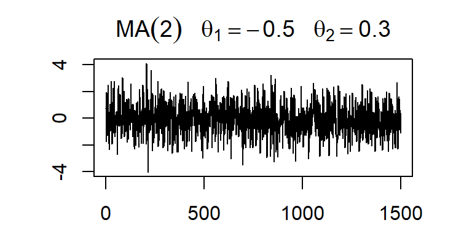
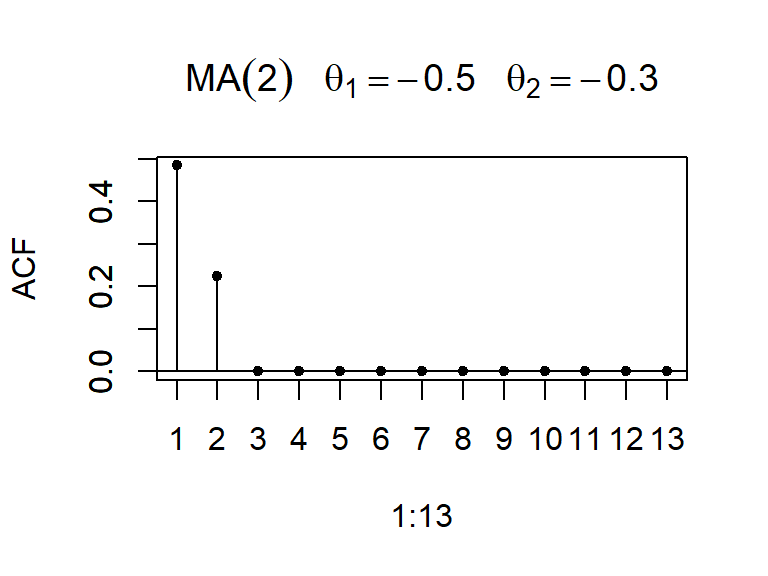
ARMA(1,1)
Contenido
Introducción
AR(1)
AR(2)
MA(1)
ARMA(1,1)
Modelo no estacional mixto: ARMA(1,1)
El ARMA(1,1) está definido por el siguiente proceso estocástico lineal: \[Z_t=C+a_t+\phi_1 Z_{t-1}-\theta_1 a_{t-1}\] o \[Z_t-\phi_1 Z_{t-1}=C+a_t-\theta_1 a_{t-1}\]
donde:
\(C\), \(\phi_1\) y \(\theta_1\) son constantes desconocidas,
\(a_t \sim wn(0,\sigma_a^2)\).
Condición de estacionariedad: \[|\phi_1|<1\]
Condición de invertibilidad: \[|\theta_1|<1\]
ARMA(1,1)
Con las condiciones de estacionariedad e invertibilidad, se puede mostrar que:
\(E(Z_t)=\frac{C}{1-\phi_1}\).
\(Var(Z_t)=\frac{(1+ 2\theta_1 \phi_1+\theta_1^2)}{1-\phi_1^2} \sigma_a^2\).
La función de autocorrelación teórica:
\[\rho_1=\frac{(1-\phi_1 \theta_1) (\phi_1-\theta_1)}{1+\theta_1^2-2\theta_1 \phi_1}\]
\[\rho_k=\phi_1 \rho_{k-1},~~~\text{para}~ k \geq 2,\] la cual decae de forma exponencial amortiguado desde el rezago 1.
- Se puede demostrar que la función de autocorrelación parcial teórica decae de forma exponencial amortiguado desde el rezago 1 también.
- La f.a.c. y f.a.c.p. teórica de un ARMA(1,1):
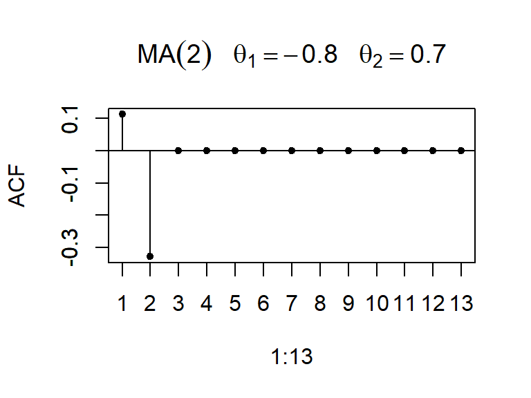
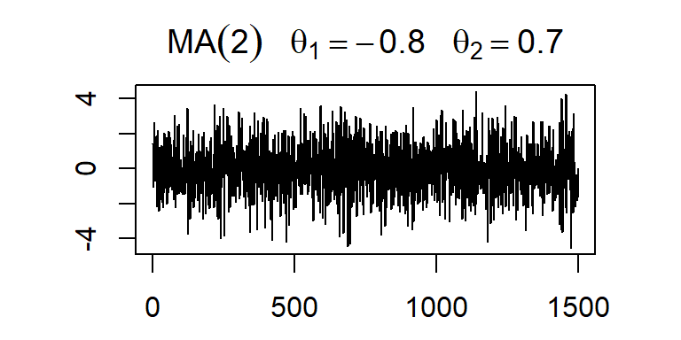
- Considere \(a_t \sim N(0,1)\), y un modelo ARMA(1,1)
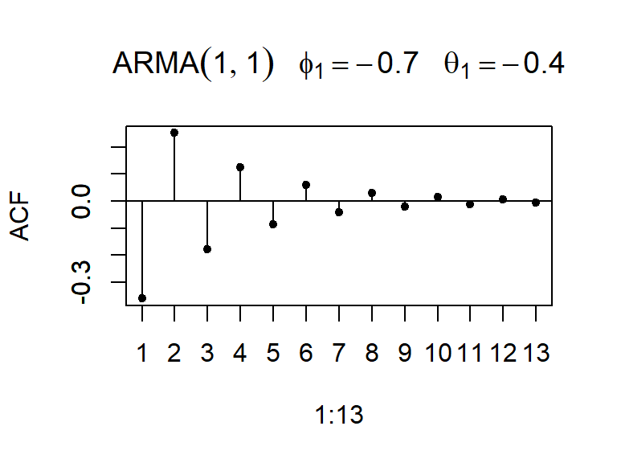
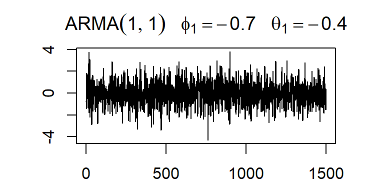
- Note que el modelo ARMA(1,1) se puede reescribir como:
\[Z_t-\phi_1 Z_{t-1}=C+a_t-\theta_1 a_{t-1}\] \[\Rightarrow Z_t-\phi_1 Z_{t-1}=E(Z_t) (1-\phi_1)+a_t-\theta_1 a_{t-1}\] \[\Rightarrow \left [Z_t - E(Z_t) \right] - \left [\phi_1 Z_{t-1} -\phi_1 E(Z_t) \right] =a_t-\theta_1 a_{t-1}\] \[\Rightarrow \tilde{Z_t} -\phi_1 \tilde{Z}_{t-1} =a_t-\theta_1 a_{t-1}\] donde \(\tilde{Z_t} = Z_t - E(Z_t)= Z_t - \mu_Z\).
Tabla de resumen 1
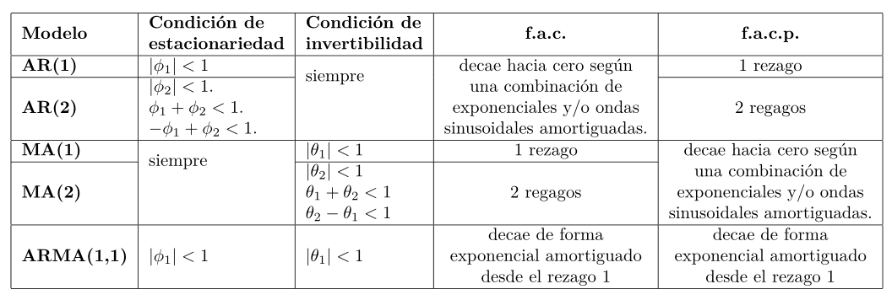Tabla de resumen
Próximo tema
Modelos ARIMA de Box&Jenkins - Parte 2
- AR(p)
- MA(q)
- ARMA(p,q)
- ARIMA(p,d,q)